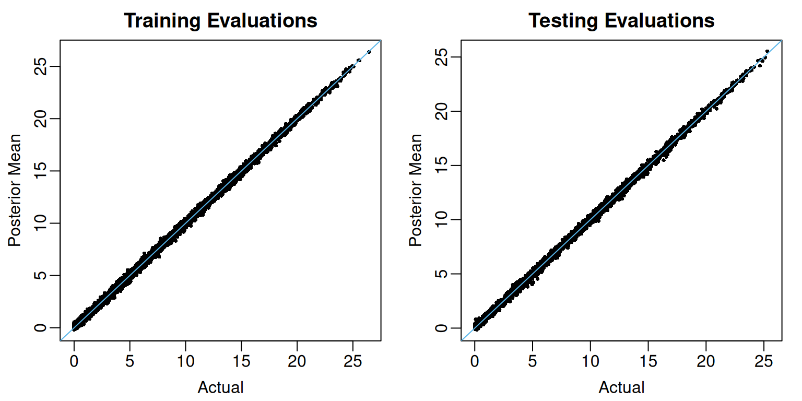

set.seed(428)
n_train <- 10000
n_test <- 5000
p_cont <- 10
p_cat <- 10
train_data <- data.frame(Y = rep(NA, times = n_train))
test_data <- data.frame(Y = rep(NA, times = n_test))
for(j in 1:p_cont){
train_data[,paste0("X",j)] <- runif(n = n_train, min = 0, max = 1)
test_data[,paste0("X",j)] <- runif(n_test, min = 0, max = 1)
}
for(j in 1:p_cat){
train_data[,paste0("X",j+p_cont)] <-
factor(sample(LETTERS[1:10], size = n_train, replace = TRUE),
levels = LETTERS[1:10])
test_data[,paste0("X", j+p_cont)] <-
factor(sample(LETTERS[1:10], size = n_test, replace = TRUE),
levels = LETTERS[1:10])
}
Background
Many implementations of BART represent categorical predictors using several binary indicators, one for each level of each categorical predictor. Axis-aligned decision rules are well-defined with these indicators: they send one level of a categorical predictor to the left and all other levels to the right (or vice versa). Regression trees built with these rules partition the set of all levels of a categorical predictor by recursively removing one level at a time. Unfortunately, most partitions of the levels cannot be built with this “remove one at a time” strategy, meaning these implementations are extremely limited in their ability to “borrow strength” across groups of levels. In other words, the combination of one-hot encoding and axis-aligned decision rules prevents trees from forming small subgroups of observations defined by combinations of levels of categorical predictors. Please see Deshpande (2025) for a more detailed argument against one-hot encoding categorical predictors.
In flexBART, decision rules based on a categorical predictor take the form where is a random subset of the discrete levels that can assume. To support such decision rules, flexBART implements a new decision rule prior for categorical predictors in which, conditionally on the splitting variable the “cutset” is formed by looping over all available values of and randomly assigning each to with probability 1/2.
If a variable contained in train_data is of class “factor”[^string2factor], flexBART determines the initial set of available values of by looking at levels of the corresponding element of train_data. As a result, flexBART is able to make predictions at new values of a categorical predictor not present in the training data so long as these values are included as levels of that factor.
Although flexBART will convert predictors of type “character” into “factor” variables, it is strongly recommended that you ensure all categorical predictors are of class “factor” before calling flexBART().
Example
Here is an example, which is taken from Section 4 of Deshpande (2025), that illustrates how flexBART works with categorical predictors. We first create a data frame of observations of continuous variables (drawn uniformly from ) and categorical variables (drawn uniformly from the discrete set ).
The following code block defines a regression function (mu_true) that depends on the continuous predictors and the categorical predictor
Code
friedman_part1 <- function(df){
return(10 * sin(pi*df$X1 * df$X1))
}
friedman_part2 <- function(df){
return(10 * (df$X3 - 0.5)^2)
}
friedman_part3 <- function(df){
return(10 * (df$X3 - 0.5)^2)
}
friedman_part4 <- function(df){
return(10*df$X4 + 5 * df$X5)
}
mu_true <- function(df){
stopifnot(all(paste0("X",c(1:5, 11)) %in% colnames(df)))
stopifnot(is.factor(df$X11))
stopifnot(all(levels(df$X11) %in% LETTERS[1:10]))
tmp_f1 <- friedman_part1(df)
tmp_f2 <- friedman_part2(df)
tmp_f3 <- friedman_part3(df)
tmp_f4 <- friedman_part4(df)
mu <- rep(NA, times = nrow(df))
ixA <- which(df$X11 == "A")
if(length(ixA) > 0){
mu[ixA] <- tmp_f1[ixA] + tmp_f2[ixA]
}
ixB <- which(df$X11 == "B")
if(length(ixB) > 0){
mu[ixB] <- tmp_f3[ixB] + tmp_f4[ixB]
}
ixC <- which(df$X11 == "C")
if(length(ixC) > 0){
mu[ixC] <- tmp_f1[ixC] + tmp_f3[ixC]
}
ixD <- which(df$X11 == "D")
if(length(ixD) > 0){
mu[ixD] <- tmp_f2[ixD] + tmp_f3[ixD]
}
ixE <- which(df$X11 == "E")
if(length(ixE) > 0){
mu[ixE] <- tmp_f1[ixE] + tmp_f4[ixE]
}
ixF <- which(df$X11 == "F")
if(length(ixF) > 0){
mu[ixF] <- tmp_f2[ixF] + tmp_f4[ixF]
}
ixG <- which(df$X11 == "G")
if(length(ixG) > 0){
mu[ixG] <- tmp_f1[ixG] + tmp_f2[ixG] + tmp_f3[ixG]
}
ixH <- which(df$X11 == "H")
if(length(ixH) > 0){
mu[ixH] <- tmp_f1[ixH] + tmp_f2[ixH] + tmp_f4[ixH]
}
ixI <- which(df$X11 == "I")
if(length(ixI) > 0){
mu[ixI] <- tmp_f1[ixI] + tmp_f3[ixI] + tmp_f4[ixI]
}
ixJ <- which(df$X11 == "J")
if(length(ixJ) > 0){
mu[ixJ] <- tmp_f2[ixJ] + tmp_f3[ixJ] + tmp_f4[ixJ]
}
return(mu)
}We now evaluate the regression function on the training and testing data and generate the training observations.
mu_train <- mu_true(train_data)
mu_test <- mu_true(test_data)
sigma <- 0.5
train_data$Y <- mu_train + sigma * rnorm(n = n_train, mean = 0, sd = 1)
1test_data <- test_data[,colnames(test_data) != "Y"]
- 1
- Removing the empty column for observations from the test data is not strictly necessary
We can now fit the model using flexBART().
fit <- flexBART::flexBART(formula = Y ~ bart(.), train_data = train_data)Internal Representation of Categorical Levels
Internally, flexBART() represents the levels of a categorical predictor with consecutive non-negative integers starting from zero. It first maps the reference level of the factor variable to 0 and then maps the remaining levels to positive integers. Importantly, flexBART() determines the different levels of a categorical predictor by calling the levels() function and not by taking the unique values of the predictor passed through the train_data argument.
We can access the internal mapping using the dinfo attribute of a flexBART()’s output (i.e., an object of class “flexBART”). This attribute is, essentially, a list recording important information about the training data like the number of continuous and categorical predictors (dinfo$p_cont and dinfo$p_cat); predictor names (dinfo$cont_names, dinfo$cat_names); and information needed to scale the continuous predictors to the interval (dinfo$x_min, dinfo$x_max, dinfo$x_sd). The cat_mapping_list element of dinfo$ is a list of length equal to the number of categorical predictors. Each element ofcat_mapping_list` is a data frame with columns listing the levels of the corresponding predictor and the non-negative integer coding. For instance, here is the mapping used for the variable in this example
fit$dinfo$cat_mapping_list[["X11"]]
#> integer_coding value
#> 1 0 A
#> 2 1 B
#> 3 2 C
#> 4 3 D
#> 5 4 E
#> 6 5 F
#> 7 6 G
#> 8 7 H
#> 9 8 I
#> 10 9 JWhile it is unlikely that you will ever need this in practice, the function predict.flexBART() relies on this mapping to make out-of-sample predictions.
Predictions
We can get posterior samples of the regression function evaluated at the test set observations using predict(). Like we did when training the model, we do not need to do any additional external pre-processing of the categorical features. We then compute simple posterior summaries.
test_preds <- predict(object = fit, newdata = test_data)
test_summary <-
data.frame(MEAN = apply(test_preds, MARGIN = 2, FUN = mean),
L95 = apply(test_preds, MARGIN = 2, FUN = quantile, probs = 0.025),
U95 = apply(test_preds, MARGIN = 2, FUN = quantile, probs = 0.975))Figure Figure 1 plots the posterior mean estimates against the actual regression function evaluations at the training (left) and testing (right) observations.
View code
oi_colors <- palette.colors(palette = "Okabe-Ito")
train_limits <- range(c(mu_train, fit$yhat.train.mean))
test_limits <- range(c(mu_test, test_summary$MEAN))
par(mar = c(3,3,2,1), mgp = c(1.8, 0.5, 0), mfrow = c(1,2))
plot(mu_train, fit$yhat.train.mean,
pch = 16, cex = 0.5,
xlim = train_limits, ylim = train_limits,
xlab = "Actual", ylab = "Posterior Mean",
main = "Training Evaluations")
abline(a = 0, b = 1, col = oi_colors[3])
plot(mu_test, test_summary$MEAN,
pch = 16, cex = 0.5,
xlim = test_limits, ylim = test_limits,
xlab = "Actual", ylab = "Posterior Mean",
main = "Testing Evaluations")
abline(a = 0, b = 1, col = oi_colors[3])
At least for these data, the pointwise out-of-sample posterior credible intervals display higher-than-nominal coverage.
mean( mu_test >= test_summary$L95 & mu_test <= test_summary$U95)
#> [1] 0.9776